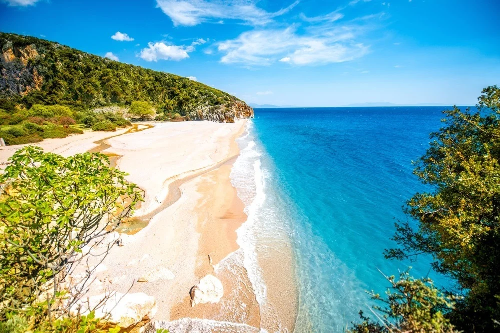
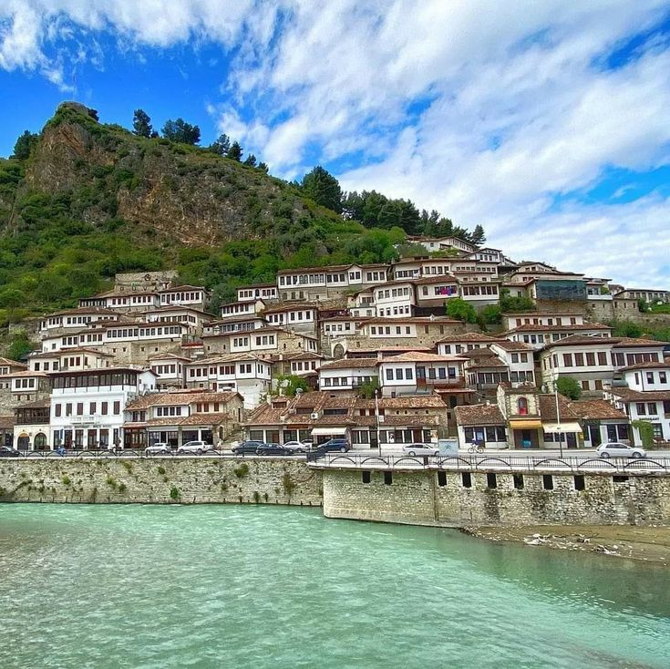
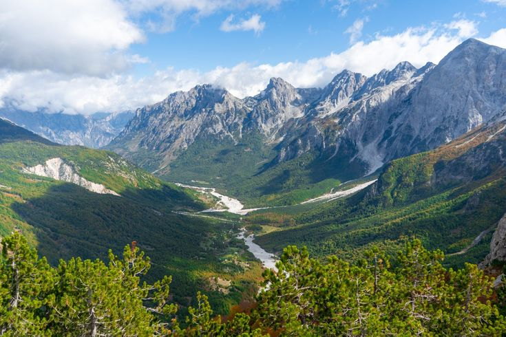
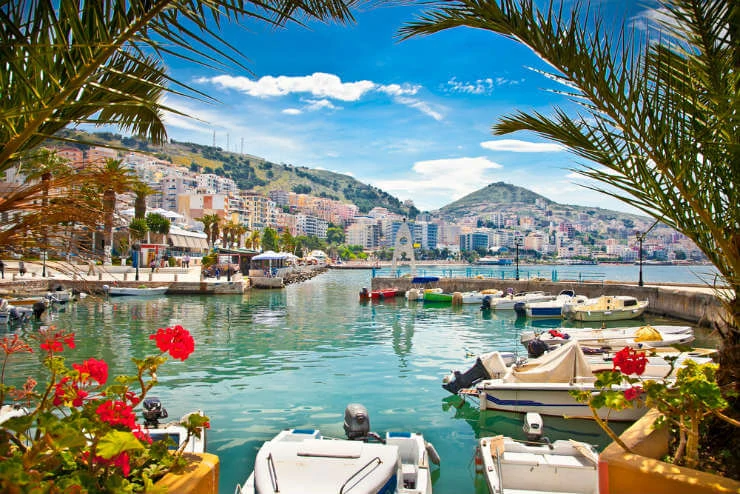
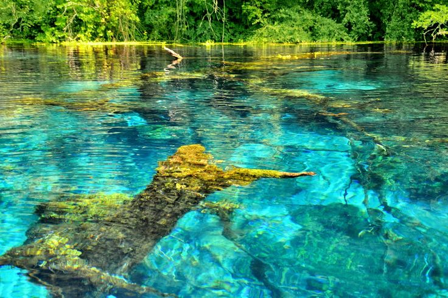
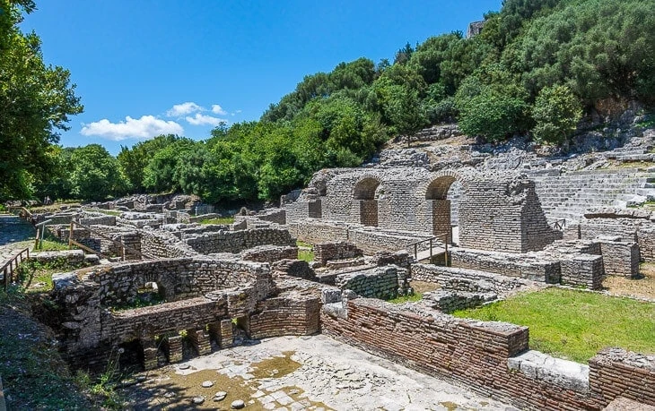
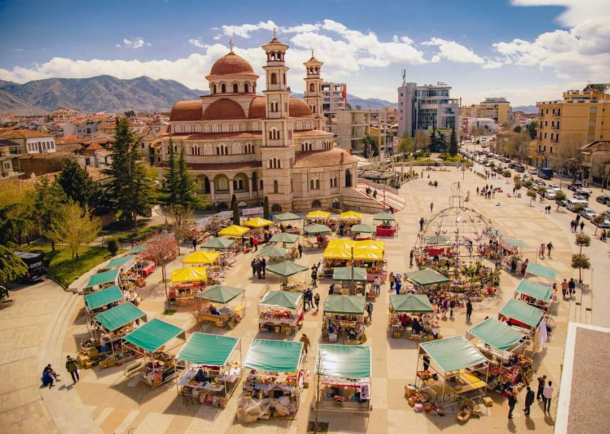
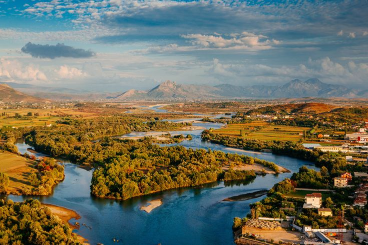
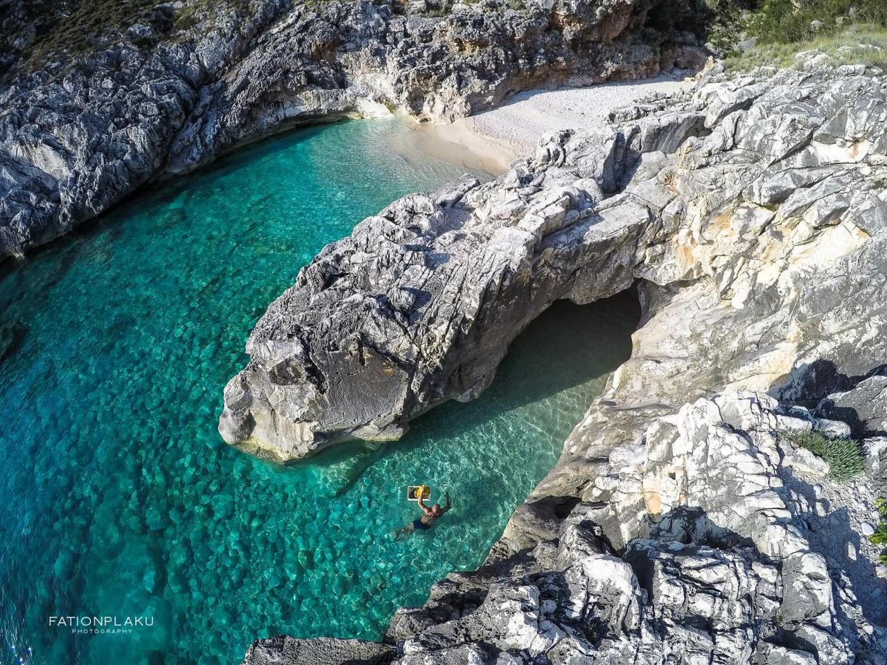

Popular Destinations
1.Albanian Riviera

The Albanian Riviera is, without question, one of the most popular tourist spots in Albania. The Riviera has a growing reputation as an important music center with numerous international music festivals, including Turtle Fest and Soundwave Albania.
Nightclubs such as Havana Beach Club near Dermis and Jale Beach’s Follie Marine attract young people from all over Europe to the Albanian Riviera.
The seaside town of Himara is one of the coolest up-and-coming places on the Riviera. The beaches of Llamani, Porto Palermo, and Filikuri are some of the most beautiful in the region. The beach of Drymades is one of the busiest and most fun in the Balkans. The Riviera definitely tops the list if you’re trying to figure out where to go in Albania for a beach vacation.
2.Berat

Berat is known as a city with thousands of windows, thanks to the typical Ottoman style houses that Berat is famous for. Today, it is a UNESCO World Heritage Site with more than 2,000 years of packed history.
The ancient city of Berat is an absolute must see in Albania. If you climb to the top of the castle, you will be treated to a fantastic view of the city of Berat. Inside the fortress walls, you will see houses where people still live their everyday lives.
Wine tasting is one of the best things to do, especially for vino lovers. Albania is home to a surprisingly good vineyard scene. You can visit the four best vineyards (Cabo, Nurellari, Malinati, and Luani) in a day and taste the best of local Albanian wine.
Also, you may visit Roshnik, a well-known village in the area of Berat, which is often called the cleanest and one of the most civilized villages.
3.Theth

If you like to spend time outdoors, Theth is undoubtedly one of the best places in Albania and makes for a great Albania weekend getaway.
Nature lovers will enjoy the serene landscapes and charming villages that are still filled with authentic traditions, cuisine, and unique cultures.
Far away from the largest Albanian cities, tucked in the north of the country at the top of the Albanian Alps, Theth remains quiet and quaint most of the year. The National Park in Theth is probably the most beautiful place in Albania, with Grunas Falls and the Lock-in Tower well-liked by tourists. If you’re planning a getaway in nature, Theth is one of the best places to visit in Albania for sure.
Mount Theti, Razma, Boga, and Vermoshi offer an unforgettable experience of Albania in its most natural state, experiences you certainly cannot miss. If you love the outdoors, Albania is one of the best places you can travel to in Europe.
4.Saranda

A coastal gem on the Ionian Sea, Saranda is a popular destination for sun and sea lovers. Its beautiful beaches, including Ksamil and Mirror Beach, offer a chance to relax and soak up the Mediterranean sun. Saranda is also a gateway to exploring ancient sites like Butrint and the mesmerizing Blue Eye.
The town’s vibrant waterfront promenade comes alive in the evenings, offering a taste of Albania’s lively nightlife.
Lekursi Castle is one of the best places in Saranda where people can go to enjoy breathtaking sunsets. Saranda is a short trip across the Ionian Sea and just an arm’s length away from the famous Greek island of Corfu.
5.The Blue Eye

Nature’s own masterpiece, the Blue Eye, is a mesmerizing natural spring in southern Albania. Its crystal-clear waters form a stunning pool that’s so clear you can see the depths below.
The vibrant blue hue of the water, surrounded by lush greenery, is truly a sight to behold. Whether you’re looking for a refreshing swim or a serene spot for a picnic, the Blue Eye offers a unique and refreshing experience.
6.Butrint National PARK

A UNESCO World Heritage Site, Butrint National Park is an archaeological wonderland that allows you to step back in time.
The ancient city of Butrint, nestled within the park, boasts Greek, Roman, Byzantine, and Venetian ruins, all shrouded in lush greenery. Wander through ancient theaters, temples, and fortifications as you uncover layers of history.
The Greeks lived in Butrint in the 6th Century B.C., and later, the Romans seized power. Butrint is one of the longest-inhabited cities in Europe. The first remains of life date back to 50,000 years ago! You can’t imagine the history this city holds.
What sets Butrint apart is its unique blend of nature and antiquity, with a backdrop of forests and wetlands that provide a haven for birdwatching and wildlife enthusiasts.
7.Korça

Known as the “City of Serenades,” Korca is a charming town in southeastern Albania that exudes a laid-back vibe.
It’s a great place to explore Albania’s cultural heritage, with its traditional architecture, museums, and lively local markets. Don’t miss the chance to savor the local cuisine and experience the warmth of Albanian hospitality.
Korca offers a glimpse into everyday life in Albania, away from the tourist crowds.
8.Shkoder

Located in the north of Albania, this picturesque city is one of Albania’s best destinations and a good starting point for fantastic road trips through the region. You will learn that Shkoder is a city of bicycles. Most locals you find, especially around the center, all ride bicycles as transport around town.
It is also an incredibly cheap place. If you are looking for a place in Albania where you get the best value for your money, look no further than Shkoder.
Travel back in time with the charm of Shkoder. The architecture is different from any other city in Albania. You might even feel like you are in an old-school film nearly a Century back in time.
If you were learning some simple phrases in Albanian, you might have difficulties conveying them in Shkoder. Southern Albanians speak a different dialect than northern Albanians, like in Shkoder.
9.Vlorë

In 1912, the independence of Albania was declared in Vlore. Vlore holds a special place in the hearts of all Albanians. That is why the Museum of Independence is located in this small town.
If you are a huge history buff looking to engulf yourself in Albanian history, you can go to the ancient Kanina Castle. According to local projections, the castle dates back to the 3rd Century B.C.
If you are interested in nature and the beautiful Albanian environment, you can visit the Bay of Vlora. You can enjoy the gentle sea breeze and simultaneously observe the bay’s fauna. There are many species of animals in the area, some of which you may not be familiar with or have ever imagined seeing in Europe.
10.Dhermi

With turquoise waters and beautiful secluded beaches, the beautiful landscape of Dhermi attracts young Albanians from all over the country in summer. Not only the beaches but also Dhermi is the epicenter of lively nightlife, another reason the young people flock here when school’s out.
The city is situated on a hill overlooking the sea and offers spectacular sunsets. Take a drink in one of the many bars and restaurants at sunset; it is always an excellent way to spend the neon evening in Dhermi.
Although this place offers a cheerful and festive atmosphere, with lively beach bars scattered throughout, there are more than enough beaches for a quiet place to sit and enjoy the Albanian Riviera landscape.